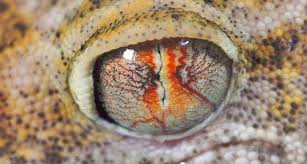

You blink about 12 times every minute.

 Your eyes are about 1 inch across and weigh about 0.25 ounce.
Your eyes are about 1 inch across and weigh about 0.25 ounce.
Your eyes are about 1 inch across and weigh about 0.25 ounce.
Even if no one in the past few generations of your family had blue or green eyes, these recessive traits can still appear in later generations.

80% of vision problems worldwide are avoidable or even curable.
80% of vision problems worldwide are avoidable or even curable.